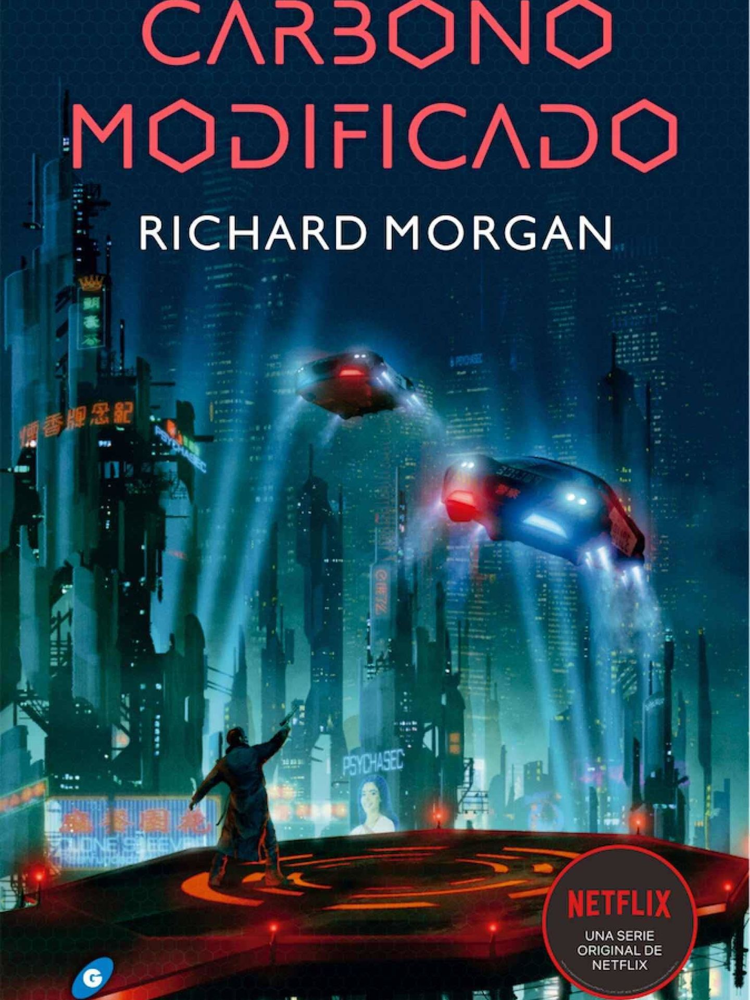

Libros Populares de Cada Categoria
ROMANCE

magina que estás destinada a salvar a tu hermana, pero al final ella muere y la razón de tu existencia se desvanece. Eso es lo que le ocurre a Grace Peterson, la chica que siempre se ha sentido invisible, la que nunca ha salido de Nebraska, la que colecciona palabras y ve pasar los días refugiada en la monotonía. Hasta que llega a sus manos el juego de El mapa de los anhelos.

Violet y Levi se conocen desde niños. Él sueña con crear un hogar. Ella, con escapar del suyo. Son mejores amigos, siempre están el uno para el otro y, cuando empiezan a crecer, se dan cuenta de que sus sentimientos también lo hacen.
MISTERIO

Alicia Berenson, una pintora de exito, dispara cinco tiros en la cabeza de su marido, y no vuelve a hablar nunca más. Su negativa a emitir palabra alguna convierte una tragedia domestica en un misterio que atrapa la imaginación de toda Inglaterra.
Hace cinco años, la estudiante Andie Bell fue asesinada por Sal Singh. La policía sabe que fue él. Sus compañeros también. Todo el mundo lo sabe. Pero Pippa ha crecido en la misma ciudad que ha sido y no lo tiene tan claro.
THRILLER

Diez de los chicos más prometedores del país, menores de 23 años, han sido invitados a un campamento muy especial en los Pirineos. El precursor de esta idea es Fernando Godoy, uno de los hombres más ricos de España, que busca a alguien joven que le ayude a dar una nueva imagen a su imperio y que en el futuro ocupe su lugar.

En una sociedad vacía y marcada por las diferencias de clase, casi todos aceptan sin oposición la perdida de libertades y las prohibiciones. Nadie se hace preguntas. Tras la Gran Pandemia, ya son muy pocos quienes se atreven a recordar que un mundo mejor fue posible.
MIEDO
¿Quien o que mutila y mata a los niños de un pequeño pueblo norteamericano?¿Por que llega cíclicamente el horror a Derry en forma de un payaso siniestro que va sembrando la destrucción a su paso? Esto es lo que se proponen averiguar los protagonistas de esta novela.

Isaac Zarco, periodista e investigador de sucesos paranormales, no está pasando por su mejor momento. La muerte de su padre le ha afectado profundamente y ha acelerado su ruptura con Cosette, el amor de su vida. Fruto de esta profunda crisis duda de si sus habilidades psíquicas han sido reales alguna vez.
CIENCIA FICCIÓN

En el desertico planeta Arrakis, el agua es el bien más preciado y llorar a los muertos, el símbolo de máxima prodigalidad. Pero algo hace de Arrakis una pieza estrategica para los intereses del Emperador, las Grandes Casas y la Cofradía, los tres grandes poderes de la galaxia. Arrakis es el único origen conocido de la melange, preciosa especia y uno de los bienes más codiciados del universo.
Takeshi Kovacs, mercenario y antiguo emisario colonial, había sido juzgado, condenado y almacenado. Pero lo transmiten a la Tierra y lo reaniman en una funda de policía a instancias de un millonario… que le pide que investigue su reciente asesinato. En un futuro en el que se ha vencido a la muerte, el crimen toma derroteros insospechados.
FANTASÍA

Violet Sorrengail creía que se uniría al Cuadrante de los Escribas para vivir una vida tranquila, sin embargo, por órdenes de su madre, debe unirse a los miles de candidatos que, en el Colegio de Guerra de Basgiath, luchan por formar parte de la élite de Navarre: el Cuadrante de los Jinetes de dragones.
Recuerda, sólo es un juego…Scarlett Dragna nunca ha abandonado la pequeña isla en la que ella y su hermana Tella viven bajo la vigilancia de su estricto y cruel padre. Desde hace años Scar sueña con asistir a la celebración anual de Caraval, unos legendarios juegos que duran una semana y en los que la audiencia participa para ganar el Gran Premio.
NOVELA NEGRA
Amber despierta en un hospital. No puede moverse. No puede hablar. No puede abrir sus ojos. Es capaz de escuchar a todos los que la rodean, pero ellos no lo saben. Amber no recuerda que fue lo que le sucedió, pero sospecha que su marido tuvo algo que ver en ello.
Hay juegos que solo tienen un final posible. Echando la vista atrás, todo comenzó el día del terrible accidente durante la feria, cuando Eddie, de doce años, conoció al Hombre de Tiza. Fue el Hombre de Tiza quien le dio la idea de los dibujos: una manera de dejar mensajes secretos entre el grupo de amigos. Fue divertido hasta que los dibujos condujeron al cuerpo sin vida de una niña.